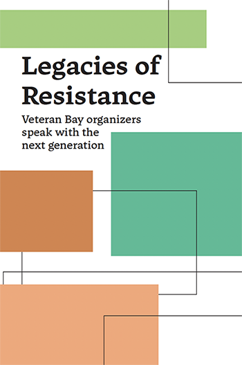

legacies of resistance
Course: community movements in sf
Illustrator, InDesign
This is a zine consisting of 17 student-led interviews of various Bay Area activists. Its purpose is to connect cross-generational activists, and there are currently copies of it available for free in the famous Green Arcade Bookstore. It spans over 100 pages. The cover was designed in Photoshop, while the content was designed in InDesign. All portraits were hand-drawn in Procreate. The design is inspired by 70's trends to reference the time when many of the interviewees were active.